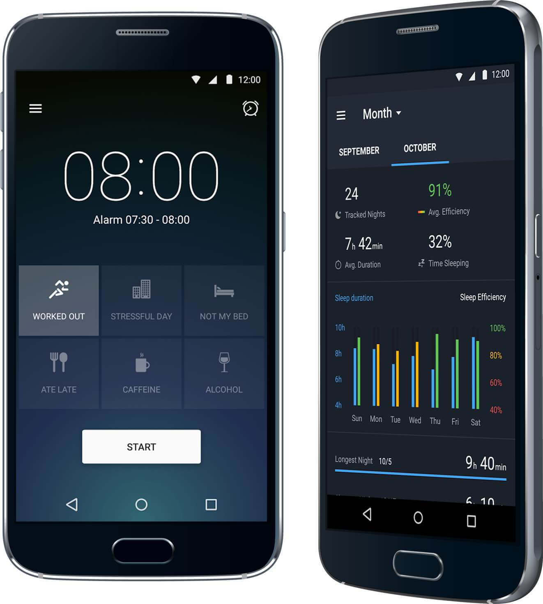
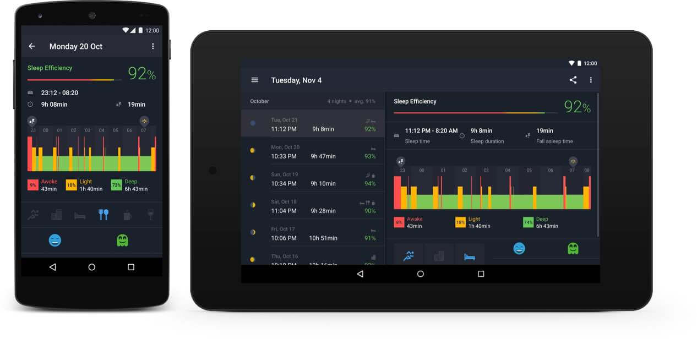

Sleep better is a mobile app that lets you track your sleep, improve your bedtime habits and wake up better using a smart alarm. It was the first project I worked on when I joined Runtastic.
Company
Runtastic
Timeframe
Sep–Oct 2014, Mar 2015
The vision
“Great nights lead to great days”
As dedicated fitness and sleep trackers were increasing in popularity, Runtastic set to the vision of giving the community an app to learn more about their sleep patterns without the need of a device other than their phone. To build Sleep Better, the team perfected sleep algorithms working together with a sleep lab and gaining insights from sleep specialists.
Setting an alarm in the home screen.
The challenge
Not a lot of time to rest
When I joined Runtastic, in September 2014, the launch of Sleep Better was due in two months, but the Android design was far behind the iOS design, with many cross-platform decisions still to be made.
The home screen changes color during the day (left). The statistics screen (right) gives the users plenty of data about their sleep patterns.
My role and the team
Android phones first, then tablets and iPads
I took the responsibility of designing most of the Android screens of the app, also taking part in cross-platform discussions. Working close with the three other designers in the team, developers and the project manager was an effective way to get me up to speed quickly in the new company. Five months later, in March 2015, I was the main designer responsible for Sleep Better for iPad and Android tablets.
The sleep diary adapts its layout for phones (left) and tablets (right).
The process
Designing a consistent cross-platform experience
A great effort was put into aligning the two platforms (iOS and Android) as much as possible while making the experience feel native to both. Sleep Better for Android was the first Runtastic app designed following Google’s Material Design guidelines, which were extensive but still immature, and kept on changing quite often. As a result of this, we quickly had to find new solutions and adapt our designs.
More screens from the Android app for phones.
For the design of the tablet versions, 5 months later, I had less time pressure. It was very interesting to get to design for different screen sizes and get some hands-on experience with iOS after working on the Android app.
The sleep diary list (left) and detail (right) on iPad in portrait.
Outcomes
Rise and shine
Sleep Better is Runtastic’s most successful launch to date, with many downloads in the first week and huge featurings in the app stores and media coverage. The quality and speed of my work were really appreciated by the team and were very important for a timely launch of the app.
Reflections
What I would change
While a lot of effort was put into internal testing for the usability of the app as well as for the tracking algorithm, I would have liked to have gathered more user insights about the needs this app solves and possible pain points. For the following projects, such as Runtastic Libra we made sure to invest more time into user interviews and testing.